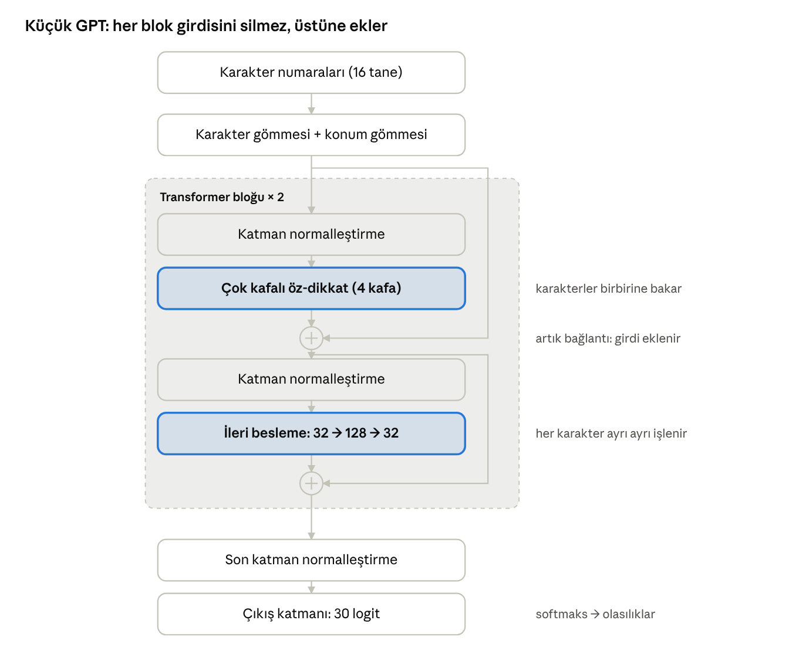

Kitaplar / Yöntem ile Sıfırdan Dil Modeli / Bölüm 8 / 14
Bölüm 7 — Transformer bloğu
Öz-dikkat tek başına bir dil modeli değildir. Onu gerçek bir modele çeviren dört parça daha vardır. Bu parçalar bir Transformer bloğu oluşturur ve bloklar üst üste dizilir. Bizim modelimizde iki blok vardır; büyük modellerde ise onlarca, hatta yüzden fazla blok bulunur.

Çok kafalı dikkat
Tek bir dikkat “kafası” bir tür bakış deseni öğrenebilir: örneğin “bir önceki harfe bak”. Ama bir karakterin aynı anda birkaç şeye bakması gerekebilir: bir önceki harfe, sözcüğün başına, bir önceki sözcüğün son ünlüsüne. Çözüm, birkaç küçük kafayı yan yana çalıştırmaktır. Modelimizde 32 boyutu 4 kafaya bölüyoruz; her kafanın sorgu, anahtar ve değer vektörleri 8 boyutludur. Kafaların çıktıları birer çıkış matrisiyle (Wo) yeniden 32 boyuta taşınıp toplanır.
İleri besleme ağı
Dikkat, karakterler arasında bilgi taşır ama bu bilgiyi işlemez; yalnızca ağırlıklı ortalama alır. Her dikkat katmanından sonra her karakter, kendi vektörünü küçük bir sinir ağından geçirir: 32 sayıyı 128’e genişletir, ReLU uygular, yeniden 32’ye indirir. Bu ağ her karakter için aynıdır ve karakterler arasında bilgi alışverişi yapmaz. Bazen şöyle özetlenir: dikkat “iletişim”, ileri besleme ise “düşünme”dir.
Artık bağlantı
Her alt katmanın sonucu, girdisinin üstüne eklenir: x := x + Dikkat(x). Buna artık bağlantı (residual connection) denir. İki yararı vardır. Birincisi, bir katman hiçbir şey öğrenmese bile girdiyi bozmaz; en kötü ihtimalle sıfır ekler. İkincisi, gradyan eğitim sırasında toplama işlemlerinin üzerinden kısalmadan geriye akar; derin modellerin eğitilebilmesinin sırrı büyük ölçüde budur.
Katman normalleştirme
Vektörlerdeki sayılar katmandan katmana büyüyüp küçülebilir; bu da eğitimi dengesizleştirir. Katman normalleştirme, her karakterin vektörünü ortalaması 0, standart sapması 1 olacak şekilde ölçekler. Ardından öğrenilen iki vektörle (g ve b) yeniden ölçekleyip kaydırır. Bizim modelimizde (GPT-2’de olduğu gibi) normalleştirme her alt katmanın önünde durur.
Kitabın modeli: KucukGPT birimi
Anlattığımız her şey KucukGPT biriminde, GPT adında bir sınıfta toplanıyor. Birim ayrıca 8. bölümde kullanacağımız iki yardımcıyı da içeriyor: bırakma (Bırak) ile ağırlıkları dosyaya kaydedip geri yükleyen Kaydet ve Yükle.
Verimlilik için bir hile kullanıyoruz. Bir yığındaki 8 pencereyi ayrı ayrı işlemek yerine alt alta koyup 128 satırlık tek bir matris yapıyoruz. Maske, her karakterin yalnızca kendi penceresindeki önceki karakterlere bakmasını sağlıyor. Böylece pencereler birbirine karışmıyor.
birim KucukGPT
{ Kitabın küçük GPT'si: karakter düzeyinde, yalnızca kod çözücüden (decoder-only)
oluşan bir Transformer. 6. ve 7. bölümde parça parça kurduğumuz her şey burada
tek bir sınıfta toplanır.
Yığın (batch) düzeni: B dizinin her biri t karakter uzunluğundadır. Hepsini alt alta
koyup (B·t) × D boyutlu tek bir matrisle çalışırız. Dikkat maskesi, bir karakterin
yalnızca KENDİ dizisindeki ve KENDİSİNDEN ÖNCEKİ karakterlere bakmasına izin verir. }
kullan YZ, Matematik, Sistem
arayüz
tip
GPT = sınıf
sözlükBoyu, bağlam, boyut, kafaSayısı, katmanSayısı, kafaBoyu: tamsayı
Gömme, Konum, Wç, bç, sonG, sonB: tensör { karakter ve konum gömmeleri, çıkış katmanı, son normalleştirme }
Wq, Wk, Wv, Wo: liste { [katman * kafaSayısı + kafa] → tensör }
g1, b1, g2, b2: liste { katman normalleştirme parametreleri, katman başına }
İ1, İb1, İ2, İb2: liste { ileri besleme ağı, katman başına }
maskeler: sözlük { hazırlanmış maskeler, yeniden kurmamak için }
bırakma: ondalık { eğitimde rastgele sıfırlanan değerlerin oranı (dropout) }
eğitimde: mantıksal { doğruysa bırakma uygulanır }
kurucu Oluştur(sB, bU, bD, kH, kL: tamsayı)
fonksiyon Parametreler: liste
fonksiyon ParametreAdedi: tamsayı
fonksiyon İleri(numaralar: tamsayı dizisi; diziSayısı, uzunluk: tamsayı): tensör
fonksiyon Bırak(x: tensör): tensör
prosedür Kaydet(yol: metin)
prosedür Yükle(yol: metin)
bitir
fonksiyon KatmanNorm(x, g, b: tensör): tensör
fonksiyon Maske(diziSayısı, uzunluk: tamsayı): tensör
uygulama
fonksiyon KatmanNorm(x, g, b: tensör): tensör
{ Her satırı (her karakterin vektörünü) ortalaması 0, sapması 1 olacak biçimde
ölçekler; sonra öğrenilen g ile çarpar, b ile kaydırır. }
değişken satır: tamsayı; m, xm, s: tensör
başla
satır := x.Şekil[0]
m := x.Ortalama(1).Yeniden(satır, 1)
xm := x - m
s := ((xm ** 2).Ortalama(1) + 0.00001).Kök.Yeniden(satır, 1)
dön xm / s * g + b
bitir
fonksiyon Maske(diziSayısı, uzunluk: tamsayı): tensör
{ Nedensel maske: i. satır j. sütuna bakabiliyorsa 0, bakamıyorsa çok büyük bir
negatif sayı. Softmaks bu negatif puanları sıfır olasılığa çevirir. }
değişken n, i, j: tamsayı; satırlar: liste; satır1: ondalık dizisi
başla
n := diziSayısı * uzunluk
satırlar := []
0'dan n - 1'e kadar her i için
başla
satır1 := []
0'dan n - 1'e kadar her j için
eğer (i böl uzunluk = j böl uzunluk) ve j <= i ise satır1.Ekle(0.0) değilse satır1.Ekle(-1000000000.0)
satırlar.Ekle(satır1)
bitir
dön Tensör(satırlar)
bitir
kurucu GPT.Oluştur(sB, bU, bD, kH, kL: tamsayı)
değişken l, h: tamsayı; ölçek: ondalık
başla
sözlükBoyu := sB; bağlam := bU; boyut := bD; kafaSayısı := kH; katmanSayısı := kL
kafaBoyu := boyut böl kafaSayısı
ölçek := 1 / Kök(boyut)
Gömme := RastgeleTensör(sözlükBoyu, boyut, 0.5, doğru)
Konum := RastgeleTensör(bağlam, boyut, 0.1, doğru)
Wq := []; Wk := []; Wv := []; Wo := []
g1 := []; b1 := []; g2 := []; b2 := []
İ1 := []; İb1 := []; İ2 := []; İb2 := []
0'dan katmanSayısı - 1'e kadar her l için
başla
0'dan kafaSayısı - 1'e kadar her h için
başla
Wq.Ekle(RastgeleTensör(boyut, kafaBoyu, ölçek, doğru))
Wk.Ekle(RastgeleTensör(boyut, kafaBoyu, ölçek, doğru))
Wv.Ekle(RastgeleTensör(boyut, kafaBoyu, ölçek, doğru))
Wo.Ekle(RastgeleTensör(kafaBoyu, boyut, ölçek / Kök(2 * katmanSayısı), doğru))
bitir
g1.Ekle(Birler(boyut, boş, doğru)); b1.Ekle(Sıfırlar(boyut, boş, doğru))
g2.Ekle(Birler(boyut, boş, doğru)); b2.Ekle(Sıfırlar(boyut, boş, doğru))
İ1.Ekle(RastgeleTensör(boyut, 4 * boyut, ölçek, doğru)); İb1.Ekle(Sıfırlar(4 * boyut, boş, doğru))
İ2.Ekle(RastgeleTensör(4 * boyut, boyut, 0.5 / Kök(4 * boyut * 2 * katmanSayısı), doğru)); İb2.Ekle(Sıfırlar(boyut, boş, doğru))
bitir
maskeler := [:]
bırakma := 0.0
eğitimde := yanlış
sonG := Birler(boyut, boş, doğru); sonB := Sıfırlar(boyut, boş, doğru)
Wç := RastgeleTensör(boyut, sözlükBoyu, 0.1, doğru); bç := Sıfırlar(sözlükBoyu, boş, doğru)
bitir
fonksiyon GPT.Parametreler: liste
başla
dön [Gömme, Konum] + Wq + Wk + Wv + Wo + g1 + b1 + g2 + b2 + İ1 + İb1 + İ2 + İb2 + [sonG, sonB, Wç, bç]
bitir
fonksiyon GPT.ParametreAdedi: tamsayı
değişken p: tensör
başla
sonuç := 0
Parametreler içindeki her p için
sonuç := sonuç + İndirge(p.Şekil, fonksiyon(a, c: tamsayı) => a * c, 1)
bitir
fonksiyon GPT.İleri(numaralar: tamsayı dizisi; diziSayısı, uzunluk: tamsayı): tensör
{ numaralar: diziSayısı × uzunluk karakter, alt alta. Dönüş: her konum için sözlükBoyu logit. }
değişken x, n1, dikkat, k, q, v, ağırlık, m: tensör; l, h, i: tamsayı
başla
{ maske her boyut için bir kez kurulur, sonra hazır olan kullanılır }
eğer değil maskeler.İçerir(Biçimle('{}x{}', diziSayısı, uzunluk)) ise
maskeler[Biçimle('{}x{}', diziSayısı, uzunluk)] := Maske(diziSayısı, uzunluk)
m := maskeler[Biçimle('{}x{}', diziSayısı, uzunluk)]
{ karakter gömmesi + konum gömmesi }
x := BirSıcak(numaralar, sözlükBoyu) @ Gömme +
BirSıcak(Eşle(Aralık(diziSayısı * uzunluk), fonksiyon(j: tamsayı) => j mod uzunluk), bağlam) @ Konum
x := Bırak(x)
0'dan katmanSayısı - 1'e kadar her l için
başla
{ 1) çok kafalı öz-dikkat, artık bağlantıyla }
n1 := KatmanNorm(x, g1[l], b1[l])
dikkat := boş
0'dan kafaSayısı - 1'e kadar her h için
başla
i := l * kafaSayısı + h
q := n1 @ Wq[i]; k := n1 @ Wk[i]; v := n1 @ Wv[i]
ağırlık := Softmaks(q @ k.T / Kök(kafaBoyu) + m)
eğer dikkat = boş ise dikkat := ağırlık @ v @ Wo[i] değilse dikkat := dikkat + ağırlık @ v @ Wo[i]
bitir
x := x + Bırak(dikkat)
{ 2) ileri besleme ağı, artık bağlantıyla }
n1 := KatmanNorm(x, g2[l], b2[l])
x := x + Bırak((n1 @ İ1[l] + İb1[l]).ReLU @ İ2[l] + İb2[l])
bitir
dön KatmanNorm(x, sonG, sonB) @ Wç + bç
bitir
fonksiyon GPT.Bırak(x: tensör): tensör
{ Bırakma (dropout): eğitim sırasında değerlerin rastgele bir kısmını sıfırlar, kalanları
1 / (1 - oran) ile büyütür. Model tek bir yola güvenmemeyi öğrenir; ezberleme azalır. }
değişken r, c, i, j: tamsayı; satırlar: liste; s: ondalık dizisi; kalan: ondalık
başla
eğer değil eğitimde veya bırakma <= 0 ise dön x
r := x.Şekil[0]; c := x.Şekil[1]; kalan := 1 / (1 - bırakma)
satırlar := []
0'dan r - 1'e kadar her i için
başla
s := []
0'dan c - 1'e kadar her j için eğer Rastgele < bırakma ise s.Ekle(0.0) değilse s.Ekle(kalan)
satırlar.Ekle(s)
bitir
dön x * Tensör(satırlar)
bitir
prosedür GPT.Kaydet(yol: metin)
{ Her parametre bir satır: sayılar boşlukla ayrılmış }
değişken p: tensör; satırlar: metin dizisi; adet: tamsayı
başla
satırlar := []
Parametreler içindeki her p için
başla
adet := İndirge(p.Şekil, fonksiyon(a, c: tamsayı) => a * c, 1)
satırlar.Ekle(Birleştir(Eşle(p.Yeniden(adet).Veri, fonksiyon(z: ondalık) => Metne(z)), ' '))
bitir
Sistem.DosyaYaz(yol, Birleştir(satırlar, Karakter(10)))
bitir
prosedür GPT.Yükle(yol: metin)
değişken satırlar, sayılar: metin dizisi; p: tensör; i, j, sütun: tamsayı; ps: liste
başla
satırlar := Sistem.DosyaOku(yol).Ayır(Karakter(10))
ps := Parametreler
0'dan Uzunluk(ps) - 1'e kadar her i için
başla
p := ps[i]
sayılar := satırlar[i].Ayır(' ')
eğer Uzunluk(p.Şekil) = 1 ise
0'dan Uzunluk(sayılar) - 1'e kadar her j için p[j] := Ondalığa(sayılar[j])
değilse
başla
sütun := p.Şekil[1]
0'dan Uzunluk(sayılar) - 1'e kadar her j için p[j böl sütun, j mod sütun] := Ondalığa(sayılar[j])
bitir
bitir
bitir
başla
bitir.Parçaları sınamak
Büyük bir modeli eğitmeden önce parçalarını sınamak iyi bir alışkanlıktır. Aşağıdaki program üç şey yapıyor. Katman normalleştirmenin gerçekten ortalama 0, sapma 1 verdiğini gösteriyor. Parametrelerin nerede olduğunu elle sayarak ParametreAdedi ile karşılaştırıyor. Son olarak modelin tek bir küçük yığını ezberleyebildiğini doğruluyor. Bu son sınama çok değerlidir: model iki pencereyi bile ezberleyemiyorsa kodda bir hata vardır ve uzun bir eğitime başlamak boşuna olur.
program TransformerBloğu
{ Bir Transformer bloğu dört parçadan oluşur:
n = KatmanNorm(x); x = x + ÇokKafalıDikkat(n) (karakterler birbirine bakar)
n = KatmanNorm(x); x = x + İleriBesleme(n) (her karakter kendi başına işlenir)
"x = x + ..." biçimine artık bağlantı denir: her blok girdiyi silmez, üstüne ekler.
Bu program parçaları KucukGPT biriminden alıp tek tek sınar:
A) Katman normalleştirme ne yapar?
B) Küçük GPT'nin parametreleri nerede?
C) Bir hata ayıklama alışkanlığı: model tek bir yığını ezberleyebiliyor mu? }
kullan Atasozleri, DilAraclari, KucukGPT, YZ
değişken
x, y, kayıp: tensör
model: GPT
opt: herhangi
harfler: metin dizisi
numara: sözlük
akış, g, h: tamsayı dizisi
i, adım, D, gömme, dikkat, ileri, norm, çıkış: tamsayı
başla
Tohum(5)
{ A) Katman normalleştirme }
x := Tensör([[2.0, 4.0, 6.0, 8.0], [100.0, 101.0, 99.0, 100.0], [-3.0, 0.0, 0.0, 3.0]])
y := KucukGPT.KatmanNorm(x, Birler(4), Sıfırlar(4))
yaz('A) Katman normalleştirme öncesi ve sonrası:', 1)
0'dan 2'ye kadar her i için
yaz(Biçimle(' {} → {} (ortalama {:.2}, sapma {:.2})', x.Satır(i).Veri,
Eşle(y.Satır(i).Veri, fonksiyon(z: ondalık) => Yuvarla(z, 2)),
y.Satır(i).Ortalama.Değer, ((y.Satır(i) ** 2).Ortalama.Değer) ** 0.5), 1)
{ B) Parametreler }
harfler := DilAraclari.Harfler
numara := DilAraclari.Numaralar(harfler)
model := GPT.Oluştur(Uzunluk(harfler), 16, 32, 4, 2)
D := 32
gömme := Uzunluk(harfler) * D + 16 * D
dikkat := 2 * (4 * D * D)
ileri := 2 * (D * 4 * D + 4 * D + 4 * D * D + D)
norm := 2 * (4 * D) + 2 * D
çıkış := D * Uzunluk(harfler) + Uzunluk(harfler)
yaz('', 1); yaz('B) Küçük GPT (2 katman, 4 kafa, 32 boyut, 16 karakter bağlam):', 1)
yaz(Biçimle(' Karakter ve konum gömmeleri : {:6}', gömme), 1)
yaz(Biçimle(' Dikkat (Q, K, V, çıkış) : {:6}', dikkat), 1)
yaz(Biçimle(' İleri besleme ağları : {:6}', ileri), 1)
yaz(Biçimle(' Katman normalleştirmeler : {:6}', norm), 1)
yaz(Biçimle(' Çıkış katmanı : {:6}', çıkış), 1)
yaz(Biçimle(' Toplam : {:6} (model.ParametreAdedi = {})',
gömme + dikkat + ileri + norm + çıkış, model.ParametreAdedi), 1)
{ C) Tek yığını ezberleme sınaması }
akış := DilAraclari.Kodla('.damlaya damlaya göl olur.acele işe şeytan karışır.', numara)
g := Dilim(akış, 0, 16) + Dilim(akış, 20, 36)
h := Dilim(akış, 1, 17) + Dilim(akış, 21, 37)
opt := Adam(model.Parametreler, 0.01)
yaz('', 1); yaz('C) İki pencerelik tek bir yığını ezberleme:', 1)
1'den 150'ye kadar her adım için
başla
opt.SıfırlaGrad
kayıp := ÇaprazEntropi(model.İleri(g, 2, 16), h)
kayıp.GeriYay
opt.Adım
eğer adım = 1 veya adım mod 30 = 0 ise yaz(Biçimle(' Adım {:3}: kayıp {:.4}', adım, kayıp.Değer), 1)
bitir
bitir.Programın çıktısı şöyledir:
A) Katman normalleştirme öncesi ve sonrası:
[2.0, 4.0, 6.0, 8.0] → [-1.34, -0.45, 0.45, 1.34] (ortalama 0.00, sapma 1.00)
[100.0, 101.0, 99.0, 100.0] → [0.0, 1.41, -1.41, 0.0] (ortalama 0.00, sapma 1.00)
[-3.0, 0.0, 0.0, 3.0] → [-1.41, 0.0, 0.0, 1.41] (ortalama 0.00, sapma 1.00)
B) Küçük GPT (2 katman, 4 kafa, 32 boyut, 16 karakter bağlam):
Karakter ve konum gömmeleri : 1472
Dikkat (Q, K, V, çıkış) : 8192
İleri besleme ağları : 16704
Katman normalleştirmeler : 320
Çıkış katmanı : 990
Toplam : 27678 (model.ParametreAdedi = 27678)
C) İki pencerelik tek bir yığını ezberleme:
Adım 1: kayıp 3.4682
Adım 30: kayıp 0.0085
Adım 60: kayıp 0.0020
Adım 90: kayıp 0.0014
Adım 120: kayıp 0.0011
Adım 150: kayıp 0.0008Çıktıyı okumak
Normalleştirme, çok farklı ölçeklerdeki üç satırı (2–8, 99–101, −3–3) aynı ölçeğe getiriyor. Burada dikkat çeken nokta şudur: ikinci satırdaki 100 civarındaki sayıların büyüklüğü kayboluyor, yalnızca aralarındaki fark kalıyor.
Parametre dökümü ilginç bir gerçeği gösteriyor: modelin yıldızı dikkat olsa da parametrelerin yarıdan fazlası (16 704 / 27 678) ileri besleme ağlarındadır. Büyük modellerde de oran benzerdir.
Ezberleme sınamasında kayıp 3,47’den 30 adımda 0,01’in altına iniyor. Model, iki pencere için her konumda doğru harfi neredeyse kesinlikle tahmin ediyor. Kod doğru çalışıyor; artık gerçek eğitime geçebiliriz.
Alıştırma. GPT.İleri içinde iki artık bağlantıyı kaldırınız (x := x + Bırak(dikkat) yerine x := Bırak(dikkat) yazınız, ileri beslemede de aynısını yapınız) ve ezberleme sınamasını yeniden çalıştırınız. Kayıp ne kadar hızlı düşüyor?